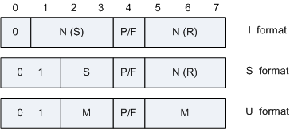

在HDLC中，数据和控制报文均以帧的标准格式传送。HDLC中的帧类似于BSC的字符块，但不是独立传输的。HDLC的完整的帧由标志字段（F）、地址字段（A）、控制字段（C）、信息字段（I）、帧校验序列字段（FCS）等组成：
| 字段 | 长度 | 含义 |
|---|---|---|
| Flag | 1字节 | 标志字段，为01111110(0x7e)的比特模式，用以标志帧的开始与结束，也可以作为帧与帧之间的填充字符。通常，在不进行帧传送的时刻，信道仍处于激活状态，在这种状态下，发送方不断地发送标志字段，而接收方则检测每一个收到的标志字段，一旦发现某个标志字段后面不再是一个标志字段，便可认为新的帧传动已经开始。采用“0比特插入法”可以实现数据的透明传输。 |
| Address | 1字节 | 地址字段，内容取决于所采用的操作方式，有主节点、从节点、组合节点之分。每个从节点与组合节点都被分配一个唯一的地址，命令帧中的地址字段携带的是对方节点的地址，而响应帧中的地址字段所携带的地址是本节点的地址。某一地址也可分配给不止一个节点，这种地址称为组地址，利用一个组地址传输的帧能被组内所有拥有该地址的节点接收。但当一个节点或组合节点发送响应时，它仍应当用它唯一的地址。还可以用全“1”地址来表示包含所有节点的地址，称为广播地址，含有广播地址的帧传送给链路上所有的节点。另外还规定全0的地址为无节点地址，不分配给任何节点，仅作为测试用。 |
| Control | 1字节 | 控制字段，用于构成各种命令及响应，以便对链路进行监视与控制。发送方主节点或组合节点利用控制字段来通知被寻址的从节点或组合节点执行约定的操作；相反，从节点用该字段作为对命令的响应，报告已经完成的操作或状态的变化。该字段是HDLC的关键。 由于Control字段的构成不同，可以把HDLC帧分为三种类型：信息帧、监控帧、无编号帧，分别简称I帧(Information)、S帧(Supervisory)、U帧(Unnumbered)。在控制字段中，第1位是“0”为I帧，第1、2 位是“1 ”为S帧，第1、2位是“11”为U帧。 图2 HDLC Control字段格式
 Control字段帧中的各字段含义如下：
控制字段的第五位是P/F位，即轮询/终止位（POLL/Final）位。 |
| Protocol | 2字节 | 协议字段。表示Information域中的数据封装的协议类型。 |
| Information | 0~N字节 | 信息字段。可以是任意的二进制比特串，长度未作限定。其上限由FCS字段或通信节点的缓冲容量来决定，目前国际上用得较多的是1000～2000比特，而下限可以是0，即无信息字段。但是监控帧中不可有信息字段。 |
| FCS | 2字节 | FCS(Frame Check Sequence)：帧检验序列字段，可以使用16位CRC，对两个标志字段之间的整个帧的内容进行校验。FCS的生成多项式是CCITT V.41建议的X'16+X'12+X'5+1。 |
| 标准 | 描述 |
|---|---|
| RFC 1549 | PPP in HDLC Framing |